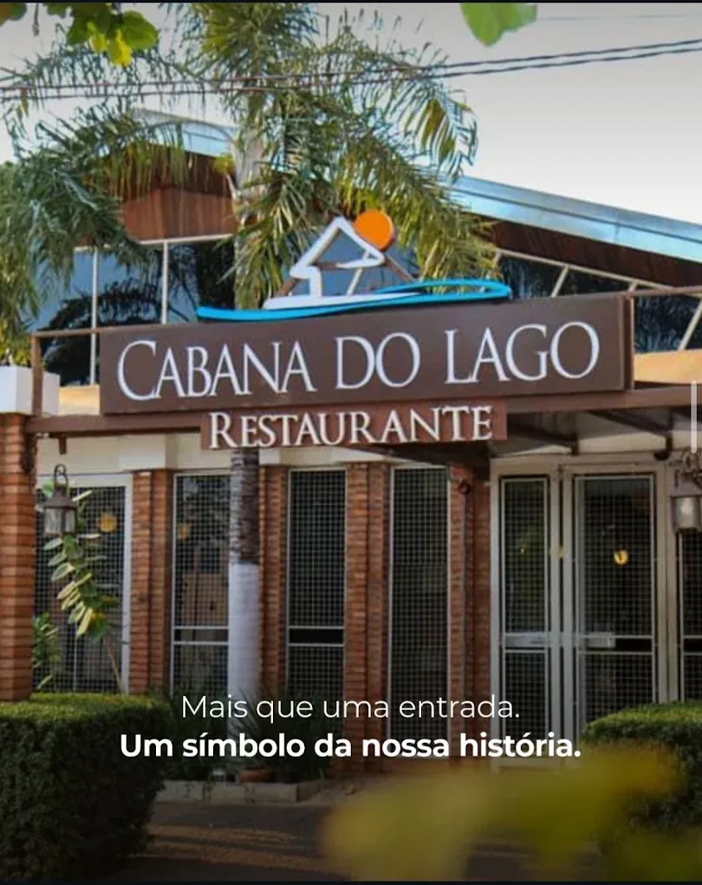

Contagem regressiva
Quinta-feira, 7 de janeiro de 2027, às 19h30
Criamos esse site para compartilhar com vocês os detalhes da organização do nosso casamento. Estamos muito felizes e contamos com a presença de todos no nosso grande dia!
Aqui vocês poderão confirmar sua presença, lista de presentes e a localização do evento.
É muito importante confirmar sua presença. Para isto contamos com sua ajuda clicando no menu “Confirme sua presença” e preenchendo os dados necessários. Para nos presentear, escolha qualquer item da nossa lista de presentes ou então vocês podem utilizar a opção de cotas, escolhendo a cota de sua preferência. Fiquem à vontade!
Aguardamos vocês no nosso grande dia!
Cerimônia e recepção

Convidamos você pontualmente para nossa cerimônia no dia 7 de janeiro de 2027, no restaurante Cabana do Lago, em Palmas, Tocantins.
7 de janeiro de 2027Quinta-feira, a partir das 19h30
Restaurante Cabana do LagoPalmas · Tocantins
Lista de presentes
A sua presença é o mais importante para nós! Mas, se desejar nos abençoar, criamos uma lista de presentes online. Você pode escolher do conforto da sua casa a cota que preferir, e o valor será revertido para a nossa tão sonhada lua de mel.
Abre a lista oficial do casal em outra aba, onde o presente é escolhido e pago com segurança.
Confirme sua presença
É muito importante confirmar sua presença. Informe seu nome completo, se irá ao evento e quantos adultos e crianças irão com você.
A confirmação é feita no formulário oficial do casal, em outra aba.